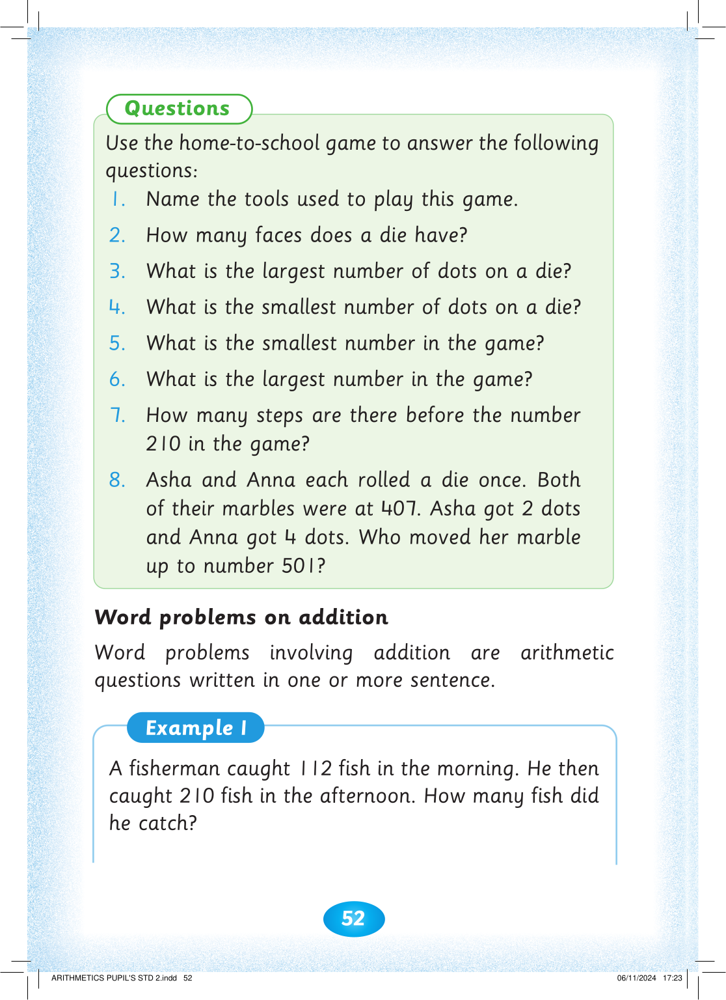

52


Questions

Use the home-to-school game to answer the following questions:
1. Name the tools used to play this game.
2. How many faces does a die have?
3. What is the largest number of dots on a die?
4. What is the smallest number of dots on a die?
5. What is the smallest number in the game?
6. What is the largest number in the game?
7. How many steps are there before the number
210 in the game?
8. Asha and Anna each rolled a die once. Both of their marbles were at 407. Asha got 2 dots and Anna got 4 dots. Who moved her marble up to number 501?
Word problems on addition
Word problems involving addition are arithmetic questions written in one or more sentence.
Example 1
A fisherman caught 112 fish in the morning. He then caught 210 fish in the afternoon. How many fish did he catch?


ARITHMETICS PUPIL'S STD 2.indd 52
06/11/2024 17:23